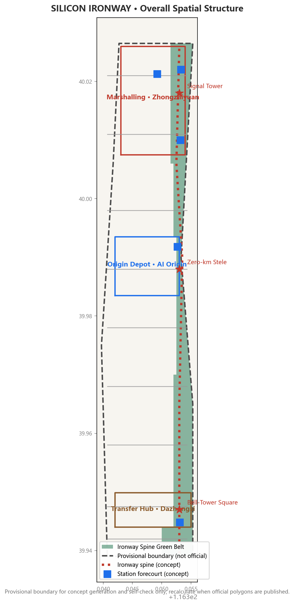
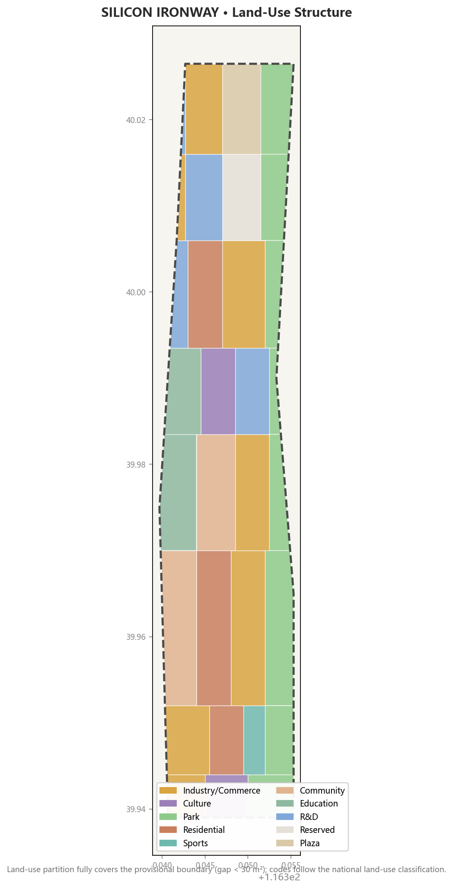
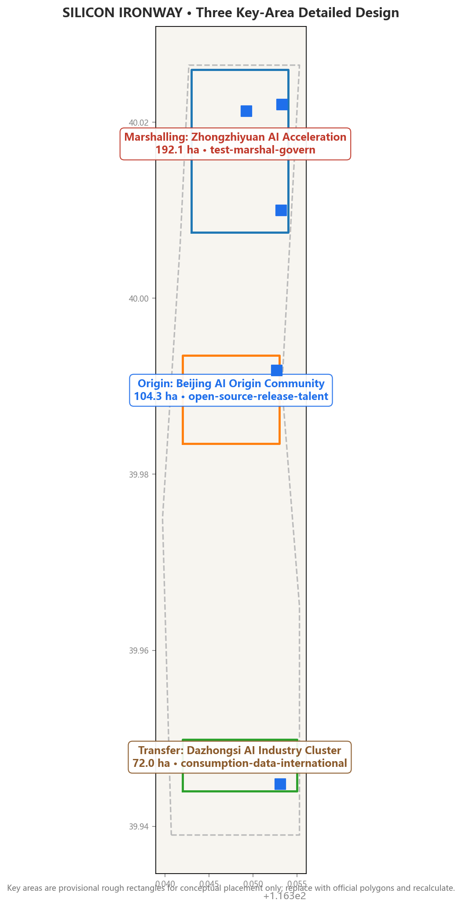
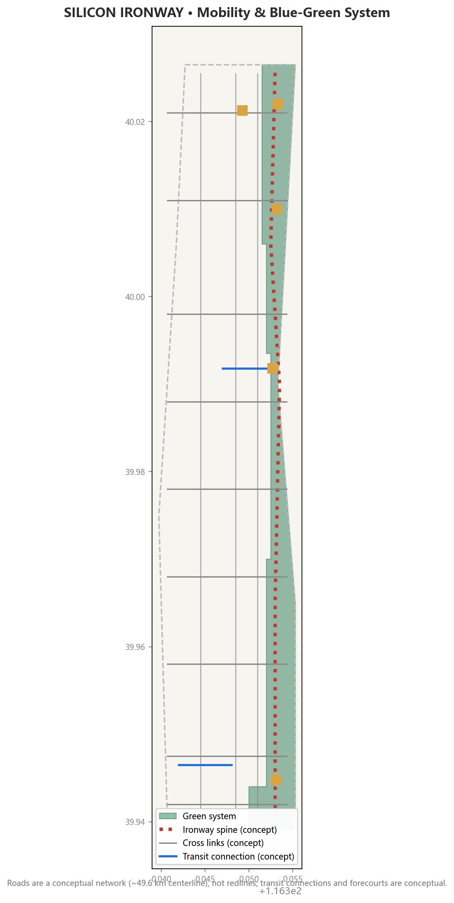
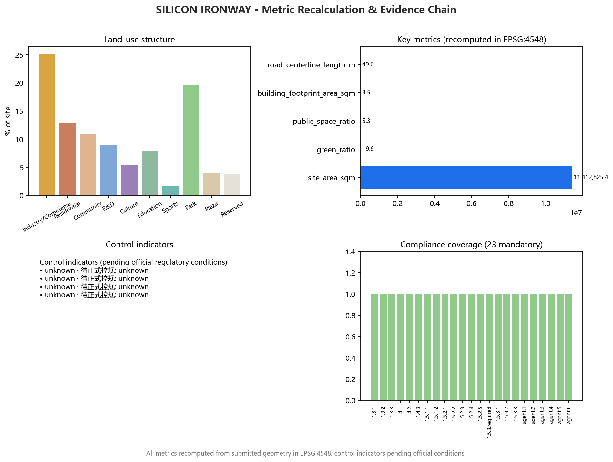

总览地图 Overview Map


三层范围 Three-Level Scope
Coordinated research 43.6 km² (ecosystem & future city) → Overall design 11.4 km² (one spine, three stations, two wings) → Key areas 368.4 ha (three stations detailed design).
重点区域 Key Areas


交通慢行 Mobility & Blue-Green
用地分区 Land Use & 建筑 Buildings
Industry/research 25.2%, residential & community 23.7%, green 19.6%; 411 conceptual building footprints (3.51M m²) test spatial scale only. Blue-green & public space ~24.9%.
蓝绿公共空间 Blue-Green & Public Space
Ironway spine slow mobility + cross-link micro-circulation + transit connections; green ~2.24M m² (19.6%), public space ~0.61M m² (5.3%).
AI 场景 AI Scenarios
| Scenario | Spatial carrier | Type |
|---|---|---|
| Origin open-source release hall | Origin Community square | Public service |
| Marshalling test field | Zhongzhiyuan reserved land | Industrial test/validation |
| Test Track outdoor validation | Xiaoyue River Wing | Industrial test/validation |
| Signal Cabin governance sandbox | Zhongguancun Service Wing | Industrial test/validation |
| AI-native consumption street | Dazhongsi commercial land | Consumption experience |
| Ironway spine AI navigation | Along the spine | Public experience |
Full 12 scenario cards (incl. 3 industrial test/validation) in proposal.md "AI Innovation Ecosystem".
Core Metrics and Evidence Chain

更新项目 Renewal Projects
9 renewal projects: Origin Square, transformation street, marshalling test field, Qinghe interface, Dazhongsi four-quadrant links, AI-native consumption blocks, spine stitching, governance sandbox, milestone system (near/mid/long-term).
Task Coverage (compliance_matrix · 23 mandatory)
| Task | Responding chapter | Evidence |
|---|---|---|
| Announcement 1.3 / 1.4 / 1.5 (17 items) | Three-level scope · Coordinated · Overall · Key areas | compliance_matrix.json |
| agent.1 Overall concept & naming | Agent taskbook response | 京张智轨 · SILICON IRONWAY · zig-zag logo direction |
| agent.2 Full-stack innovation system | Coordinated research · ecosystem map | 8 global cases · origin-marshalling-transfer loop |
| agent.3 Scenarios & vibrant AI city | AI innovation ecosystem | 12 scenario cards (incl. 3 test scenes) · 5 personas |
| agent.4 Public space & landmarks | Blue-green space | 3 pilgrimage landmarks · milestone system · component kit |
| agent.5 Cultural narrative | Agent taskbook response | "Three departures of one track" |
| agent.6 Events & long-term operation | Renewal & phasing | Annual event calendar · community operation · conversion path |
Standard Response (standard_matrix · 9)
| Standard | Status | Response |
|---|---|---|
| Pre-qualification announcement | addressed | Three scopes and tasks mapped |
| Agent open-call taskbook | addressed | agent.1–agent.6 expanded in text |
| Urban Design Management Measures | addressed | Character control & component kit |
| Regulatory Detailed Plan Measures | addressed | Control indicators unknown + pending |
| Land & Sea Use Classification Guide | addressed | Standard land-use codes |
| Architectural Depth 2016 | data_gap | Pending official file |
| Barrier-Free Environment Law | addressed | Human-service fallback (Art. 39 scope) |
| Generative AI Interim Measures | addressed | Scenario boundaries & content safety |
| Guobanfa [2020] No. 45 | addressed | Elderly parallel services (background) |
Design Depth (design_depth_matrix · 15 items complete)
Existing conditions · Three-level scope · Overall structure · Land-use layout · Development intensity · Height/massing/character · Retain-renovate-demolish · Traffic-rail-slow-parking · Municipal-new infrastructure · Blue-green public space · Key-area detailed design · Renewal projects · Phasing · Metric recalculation · Risk/missing data
自检状态 Self-Check Status
| Gate | Status |
|---|---|
| deterministic_validation | PASS (after fixes) |
| spatial_review | PASS (minor: provisional labels) |
| visual_review | PASS |
| professional_review | PASS |
| participant_preflight | pending |
Data and Compliance
| File | Role |
|---|---|
| proposal.md / proposal.en.md | Primary proposal (v2 bilingual contract) |
| geometry/*.geojson (9 layers) | Spatial evidence: boundary · key areas · land use · buildings · roads · green · public · constraints · phasing |
| metrics.json (24 metrics) | Metric recalculation: spatial/control/performance |
| sources.json / assumptions.json | Sources and assumptions (22 sources / 7 assumptions) |
| drawings/a3-booklet.pdf · a0-boards.pdf | Drawings (presentation only, not authoritative data) |
| report/proposal.html | Offline reading version |
来源与假设 Sources & Assumptions
Sources: official announcement (2026-05-09), agent taskbook (2026-05-18), Urban Design Management Measures, Regulatory Detailed Plan Measures, Land & Sea Use Classification Guide, Barrier-Free Environment Law, Generative AI Interim Measures, Guobanfa [2020] No. 45, repository site package and source registry; 8 global cases are background references.
Assumptions: provisional boundary is not an official redline (7 assumptions, see assumptions.json); conceptual building massing is not a survey baseline; control indicators pending official regulatory conditions.